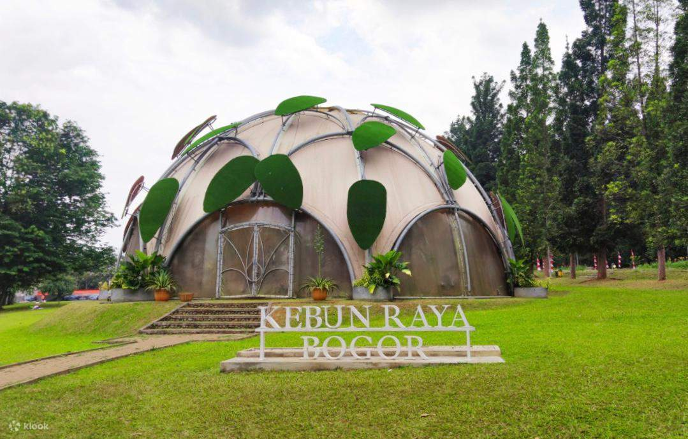
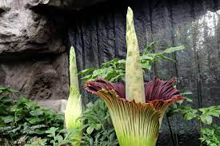

Sekilas Kebun Raya Bogor

Tentang Kebun Raya Bogor
Kebun Raya Bogor atau Kebun Botani Bogor adalah sebuah kebun botani besar yang terletak di Kota Bogor, Indonesia. Kebun ini dioperasikan oleh Badan Riset dan Inovasi Nasional (BRIN). Kebun ini terletak di pusat kota Bogor dan bersebelahan dengan kompleks istana kepresidenan Istana Bogor. Luasnya mencapai 87 hektar dan memiliki 15.000 jenis koleksi pohon dan tumbuhan. Letak geografis Bogor yang mengalami hujan hampir setiap hari bahkan di musim kemarau menjadikan kebun ini sebagai lokasi yang menguntungkan untuk budidaya tanaman tropis.
Didirikan pada tahun 1817 oleh pemerintah Hindia Belanda, Kebun Raya Bogor berkembang pesat di bawah kepemimpinan berbagai ahli botani terkenal termasuk Johannes Elias Teijsmann, Rudolph Herman Christiaan Carel Scheffer, dan Melchior Treub. Sejak didirikan, Kebun Raya Bogor berfungsi sebagai pusat penelitian utama pertanian dan hortikultura, dan merupakan kebun raya tertua di Asia Tenggara. Saat ini Kebun Raya Bogor ramai dikunjungi sebagai tempat wisata, terutama hari Sabtu dan Minggu. Tiket masuknya Rp 30.000. Di sekitar Kebun Raya Bogor tersebar pusat-pusat keilmuan yaitu Herbarium Bogoriense, Museum Zoologi Bogor, dan PUSTAKA
Koleksi Pohon dan Tumbuhan
Tumbuhan
Rafflesia Arnoldi
 Padma raksasa (bahasa Latin: Rafflesia arnoldii) adalah tumbuhan parasit obligat yang terkenal karena memiliki bunga berukuran sangat besar, bahkan merupakan bunga terbesar di dunia ke-1. Bunga Rafflesia dikatakan bunga yang unik karena hanya berupa bunga mekar tanpa daun, akar dan tidak memiliki batang. Rafflesia memiliki jaringan yang mirip seperti fungsi akar yang disebut haustarium. Selain itu, Rafflesia tumbuh dan bergantung pada inang di jaringan tumbuhan merambat (liana) Tetrastigma dan tidak memiliki daun sehingga tidak mampu berfotosintesis. Tumbuhan inang yang akan membantu Raflessia untuk berfotosintesis. Aroma busuk dari R. arnoldii mengundang serangga dan semut. Berbagai jenis serangga seperti lalat (Drosophila colorata, Chrysomya megacephala, Sarcophaga haemorridalis) ditemukan dan secara aktif mengunjungi bunga-bunga yang sudah tua. Serangga lain seperti semut hitam (Euprenolepisare sp.) juga ditemukan pada knop yang telah mati dan dianggap sebagai sumber ancaman yang mematikan bagi knop.
Padma raksasa (bahasa Latin: Rafflesia arnoldii) adalah tumbuhan parasit obligat yang terkenal karena memiliki bunga berukuran sangat besar, bahkan merupakan bunga terbesar di dunia ke-1. Bunga Rafflesia dikatakan bunga yang unik karena hanya berupa bunga mekar tanpa daun, akar dan tidak memiliki batang. Rafflesia memiliki jaringan yang mirip seperti fungsi akar yang disebut haustarium. Selain itu, Rafflesia tumbuh dan bergantung pada inang di jaringan tumbuhan merambat (liana) Tetrastigma dan tidak memiliki daun sehingga tidak mampu berfotosintesis. Tumbuhan inang yang akan membantu Raflessia untuk berfotosintesis. Aroma busuk dari R. arnoldii mengundang serangga dan semut. Berbagai jenis serangga seperti lalat (Drosophila colorata, Chrysomya megacephala, Sarcophaga haemorridalis) ditemukan dan secara aktif mengunjungi bunga-bunga yang sudah tua. Serangga lain seperti semut hitam (Euprenolepisare sp.) juga ditemukan pada knop yang telah mati dan dianggap sebagai sumber ancaman yang mematikan bagi knop.
Bunga Bangkai

Kibut atau bunga bangkai raksasa atau suweg raksasa, (Amorphophallus titanum Becc.) adalah tumbuhan dari famili talas-talasan (Araceae) endemik dari Sumatra, Indonesia, yang dikenal sebagai tumbuhan dengan bunga majemuk terbesar di dunia, meskipun catatan menyebutkan bahwa kerabatnya, A. gigas (juga endemik dari Sumatra) dapat menghasilkan bunga setinggi 5 m. Kibut disebut juga sebagai bunga bangkai, yang disebabkan oleh bunganya yang dapat mengeluarkan bau seperti bangkai yang membusuk. Hal ini bertujuan untuk mengundang kumbang dan lalat untuk menyerbuki bunganya.
Kibut sering dipertukarkan dengan padma raksasa atau Rafflesia arnoldii. Mungkin karena kedua jenis tumbuhan ini sama-sama memiliki bunga yang berukuran raksasa, dan keduanya sama-sama mengeluarkan bau yang tak enak. Jenis-jenis Amorphophallus juga dapat dijumpai pada hutan hujan tropis di Stasiun Penelitian Hutan Tropis (SPHT) Taman Nasional Kayan Mentarang di Lalut Birai, Desa Long Alango, Kecamatan Bahau Hulu, Kabupaten Malinau. Tumbuhan ini hanya ada di Indonesia.
Ragam Taman
Taman
Taman Durian
Taman Durian merupakan taman konservasi binaan Pertamina yang berada di wilayah Kebun Raya Bogor. Pertamina melalui Taman Durian ini berupaya untuk memperkenalkan berbagai macam durian asli Indonesia. Jenis yang ditanam pada Taman Durian ini, salah satunya adalah Durian Lai Mas yang berasal dari Kalimantan. Pertamina mempunyai komitmen untuk terus melakukan konservasi tanaman dalam rangka mendukung pemerintah di dalam pencapaian Target 15 Tujuan Pembangunan Berkelanjutan melindungi dan melestarikan keanekaragaman hayati
Taman Nepenthes
Taman Nepenthes merupakan taman konservasi binaan Pertamina yang berada di wilayah Kebun Raya Bogor. Pertamina telah melakukan konservasi beberapa jenis tanaman Nepenthes di wilayah ini, antara lain: Nepenthes mirabilis, Nepenthes reinwardtiana, Nepenthes ampullaria, Nepenthes gracilis, Nepenthes xhookeriana, Nepenthes sumatrana, dan Nepenthes rafflesiana. Pertamina mempunyai komitmen untuk terus melakukan konservasi tanaman dalam rangka mendukung pemerintah di dalam pencapaian Target 15 Tujuan Pembangunan Berkelanjutan melindungi dan melestarikan keanekaragaman hayati. Di Indonesia, Nepenthes dikenal dengan nama “Kantong Semar”. Termasuk tumbuhan karnivora yang menghasilkan kantong untuk menjebak dan menangkap mangsa berupa serangga maupun binatang kecil lainnya untuk mendapatkan nutrisi. Nepenthes dapat ditemukan di Pulau Kalimantan, Sumatera, Jawa, Sulawesi, Maluku, dan Papua. Kantong semar biasa hidup di daerah yang terbuka, lembab dan miskin hara. Nepenthes termasuk salah satu tumbuhan yang terancam kepunahannya akibat adanya alih fungsi lahan dan hutan sebagai habitat alaminya.
Griya Anggrek
Griya Anggrek merupakan tempat display anggrek-anggrek species dan anggrek hybrid yang sedang berbunga, untuk meningkatkan kesadaran dan apresiasi terhadap anggrek alam, unit ini juga menyediakan penjualan tanaman bibit anggrek species botolan dan tanaman non anggrek ( Nepenthes dan Alocasia ) yang merupakan hasil perbanyakan dari laboratorium kultur jaringan.
Kontak Kebun Raya Bogor